2.1.8. Lab – Implement Dynamic Certificate Injection¶
In this section we will use HTTP Connector to retrieve a user’s certificate from Active Directory to be used in the BIG-IP Certificate minting process
2.1.8.1. Task – Create a HTTP Connector Transport¶
- Navigate to Access >> Authentication >> HTTP Connector >> HTTP Connector Transport Click the + plus Symbol
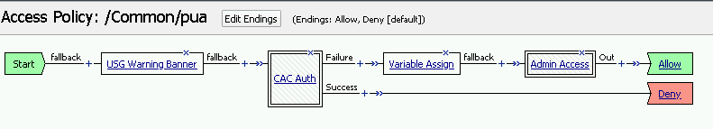
- Enter Name demo-http-connector
- Select prebuilt-dns-resolver from the DNS Resolver dropdown
- Select prebuilt-adpiadmin-serverssl from the Server SSL Profile
- Click Save
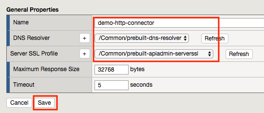
2.1.8.2. Task – Create a HTTP Connector Request¶
- Navigate to Access >> Authentication >> HTTP Connector >> HTTP Connector Request. Click the + plus symbol
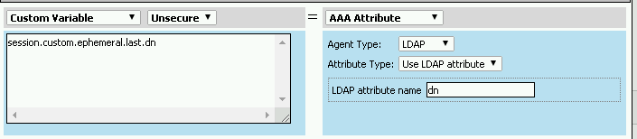
- Enter name get-cert
- Select demo-http-connector from the dropdown
- Enter URL https://adapi.f5lab.local:8443/aduser/cert?useridentity=%{perflow.username}
- Enter GET for the Method
- Select Parse for the Response Action
- Click Save
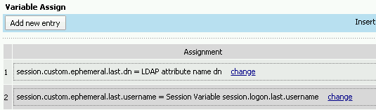
2.1.8.3. Task – Create a Per-Request Policy¶
- Navigate to Access >> Profiles/Policies >> Per-Request Policies Click the + Plus Symbol
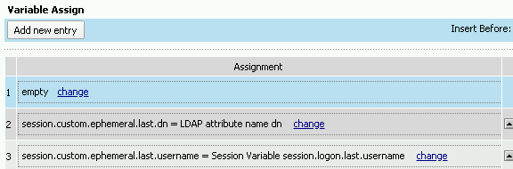
- Enter the name certsso_prp
- Select the Language English
- Click Finished
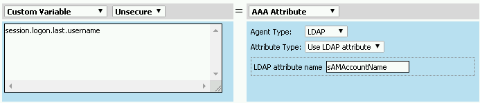
- Click edit under Per-Request Policy

- Click Add New Subroutine

- Enter the name Request Cert
- Click Save

- Expand the subroutine by click the + plus symbol

- Click the + plus symbol on the fallback branch.

- Click the General Purpose tab
- Select HTTP Connector
- Click Add Item

- Select get-cert drop the dropdown

- Click Edit Terminals

- Click Add Terminal

- Change the name for the default branch to Fail
- Change the default branch text to Red
- Enter the name Success for the new branch
- Change the color of the new branch to Success

- Click the Fail terminal at the end of the Successful branch
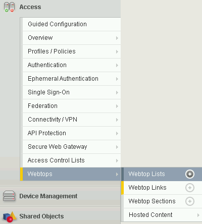
- Select the Success Terminal
- Click Save
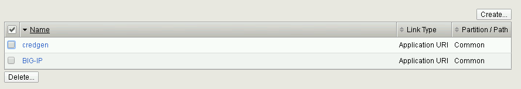
- Click the + plus symbol on the successful branch
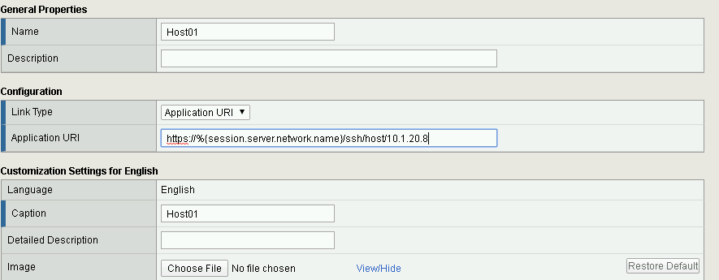
- Click the Assignment tab
- Select Variable Assign
- Click Add Item
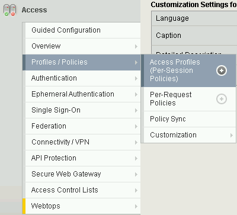
- Click Add new entry
- Click change
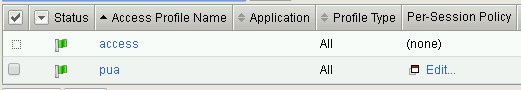
- Enter session.ssl.cert.whole for the Custom Variable
- Select Session Variable from the dropdown
- Enter subsession.http_connector.body.certificate for the Session Variable
- Click Finished
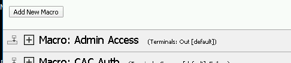
- Click Save
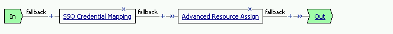
- Click the + plus symbol located between Start and Allow in the policy
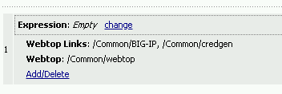
- Click the Subroutines tab
- Select the Request Cert subroutine
- Click Add Item
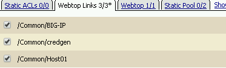
- Click the + plus symbol on the success branch of Request Cert
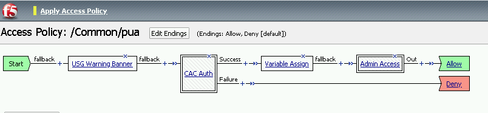
- Click the General Purpose tab
- Select irule Event
- Click Add Item
Note
This irule event triggers the code from the previously attached irule. This irule must be used when inserting a certificate using C3D in a per-request policy.
when ACCESS_PER_REQUEST_AGENT_EVENT {
set cert [ACCESS::session data get {session.ssl.cert.whole}]
log local0. “My cert: $cert”
SSL::c3d cert [X509::pem2der $cert]
}
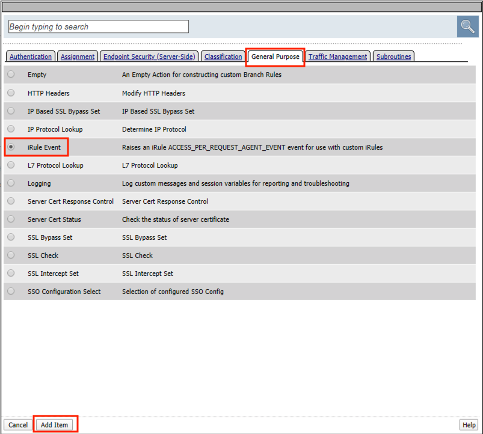
- Enter lab for the ID
- Click Save
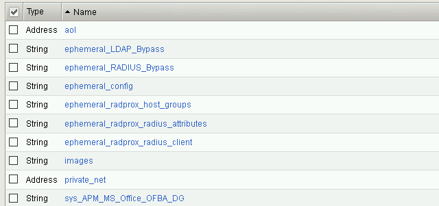
2.1.8.4. Task – Attach the PRP to the mTLS virtual Server¶
- Navigate to Local Traffic >> Virtual Servers. Click Virtual Server List
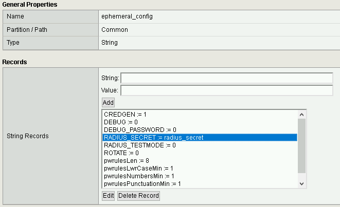
- Click mtls_vs
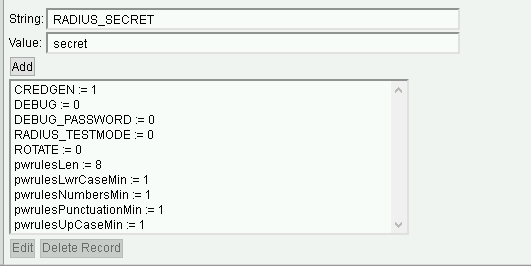
- Navigate to the Access Policy Section and select certsso_prp from the Per-Request Policy dropdown
- Click Update